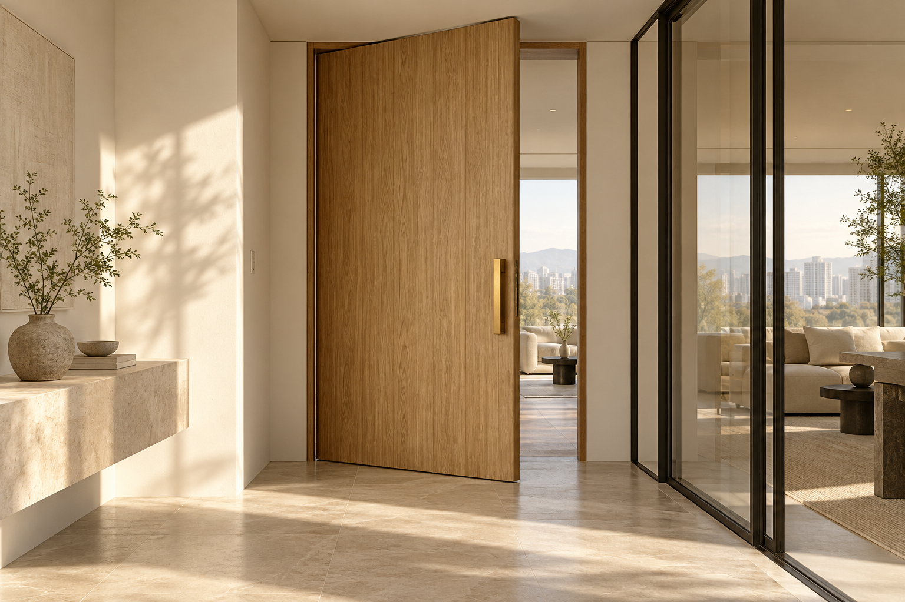
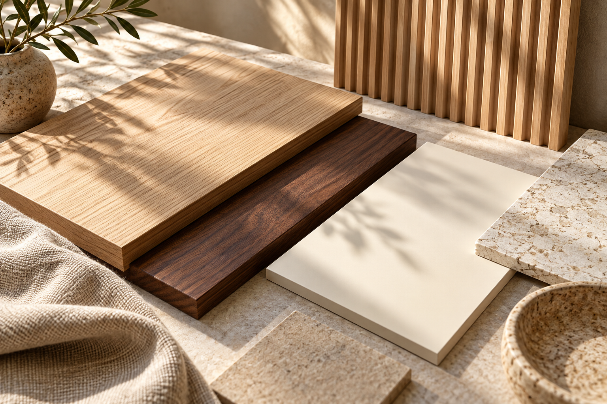

MATERIAL BOOK
온결 소재 북
공간에 자연스럽게 어울리는 소재를 찾아보세요.

시그니처 도어 · OG-0101
오크 브리즈
방과 방 사이, 나만의 분위기를 만드는 문. 시그니처 도어의 형태를 담백하게 정리하고, 주변 소재와 자연스럽게 어우러지는 나무의 결을 제안합니다.
트렌드 도어 · OG-0102
샌드 라인
방과 방 사이, 나만의 분위기를 만드는 문. 트렌드 도어의 형태를 담백하게 정리하고, 주변 소재와 자연스럽게 어우러지는 차분한 톤을 제안합니다.
ABS 도어 · OG-0103
아이보리 쉐이드
방과 방 사이, 나만의 분위기를 만드는 문. ABS 도어의 형태를 담백하게 정리하고, 주변 소재와 자연스럽게 어우러지는 나무의 결을 제안합니다.
타공 도어 · OG-0104
루미 글라스
방과 방 사이, 나만의 분위기를 만드는 문. 타공 도어의 형태를 담백하게 정리하고, 주변 소재와 자연스럽게 어우러지는 차분한 톤을 제안합니다.
멤브레인 도어 · OG-0105
소프트 그레인
방과 방 사이, 나만의 분위기를 만드는 문. 멤브레인 도어의 형태를 담백하게 정리하고, 주변 소재와 자연스럽게 어우러지는 나무의 결을 제안합니다.
키즈 도어 · OG-0106
리틀 포레스트
방과 방 사이, 나만의 분위기를 만드는 문. 키즈 도어의 형태를 담백하게 정리하고, 주변 소재와 자연스럽게 어우러지는 차분한 톤을 제안합니다.
원목 도어 · OG-0107
내추럴 오크
방과 방 사이, 나만의 분위기를 만드는 문. 원목 도어의 형태를 담백하게 정리하고, 주변 소재와 자연스럽게 어우러지는 나무의 결을 제안합니다.
하드웨어 · OG-0108
브라스 라인
방과 방 사이, 나만의 분위기를 만드는 문. 하드웨어의 형태를 담백하게 정리하고, 주변 소재와 자연스럽게 어우러지는 차분한 톤을 제안합니다.
프레임 · OG-0109
슬림 엣지
방과 방 사이, 나만의 분위기를 만드는 문. 프레임의 형태를 담백하게 정리하고, 주변 소재와 자연스럽게 어우러지는 나무의 결을 제안합니다.
양개 도어 · OG-0201
듀오 클리어
공간을 나누고, 빛과 시선은 이어주는 경계. 양개 도어의 형태를 담백하게 정리하고, 주변 소재와 자연스럽게 어우러지는 나무의 결을 제안합니다.
온결 슬라이딩 도어 · OG-0202
슬라이드 라이트
공간을 나누고, 빛과 시선은 이어주는 경계. 온결 슬라이딩 도어의 형태를 담백하게 정리하고, 주변 소재와 자연스럽게 어우러지는 차분한 톤을 제안합니다.
글라스 도어 · OG-0203
뮤트 글라스
공간을 나누고, 빛과 시선은 이어주는 경계. 글라스 도어의 형태를 담백하게 정리하고, 주변 소재와 자연스럽게 어우러지는 나무의 결을 제안합니다.
하드웨어 · OG-0204
라운드 핸들
공간을 나누고, 빛과 시선은 이어주는 경계. 하드웨어의 형태를 담백하게 정리하고, 주변 소재와 자연스럽게 어우러지는 차분한 톤을 제안합니다.
프레임 · OG-0205
씬 프레임
공간을 나누고, 빛과 시선은 이어주는 경계. 프레임의 형태를 담백하게 정리하고, 주변 소재와 자연스럽게 어우러지는 나무의 결을 제안합니다.


UV 페이퍼 시트 · OG-0401
페일 오크
익숙한 표면에 새로운 색과 질감을 더합니다. UV 페이퍼 시트의 형태를 담백하게 정리하고, 주변 소재와 자연스럽게 어우러지는 나무의 결을 제안합니다.
페이퍼 시트 · OG-0402
코튼 그레이
익숙한 표면에 새로운 색과 질감을 더합니다. 페이퍼 시트의 형태를 담백하게 정리하고, 주변 소재와 자연스럽게 어우러지는 차분한 톤을 제안합니다.
인테리어필름 · OG-0403
웜 샌드
익숙한 표면에 새로운 색과 질감을 더합니다. 인테리어필름의 형태를 담백하게 정리하고, 주변 소재와 자연스럽게 어우러지는 나무의 결을 제안합니다.
그 외 인테리어필름 · OG-0404
스톤 베이지
익숙한 표면에 새로운 색과 질감을 더합니다. 그 외 인테리어필름의 형태를 담백하게 정리하고, 주변 소재와 자연스럽게 어우러지는 차분한 톤을 제안합니다.
프리미엄 보드 · OG-0501
테라 텍스처
자연스러운 질감으로 깊어지는 벽의 표정. 프리미엄 보드의 형태를 담백하게 정리하고, 주변 소재와 자연스럽게 어우러지는 나무의 결을 제안합니다.
힐링월 보드 · OG-0502
노트 월
자연스러운 질감으로 깊어지는 벽의 표정. 힐링월 보드의 형태를 담백하게 정리하고, 주변 소재와 자연스럽게 어우러지는 차분한 톤을 제안합니다.
원목 보드 · OG-0503
월넛 그레인
자연스러운 질감으로 깊어지는 벽의 표정. 원목 보드의 형태를 담백하게 정리하고, 주변 소재와 자연스럽게 어우러지는 나무의 결을 제안합니다.
입체 보드 · OG-0504
리브드 오크
자연스러운 질감으로 깊어지는 벽의 표정. 입체 보드의 형태를 담백하게 정리하고, 주변 소재와 자연스럽게 어우러지는 차분한 톤을 제안합니다.
기타 보드 · OG-0505
미스트 라인
자연스러운 질감으로 깊어지는 벽의 표정. 기타 보드의 형태를 담백하게 정리하고, 주변 소재와 자연스럽게 어우러지는 나무의 결을 제안합니다.
욕실천장재 · OG-0506
클라우드 화이트
자연스러운 질감으로 깊어지는 벽의 표정. 욕실천장재의 형태를 담백하게 정리하고, 주변 소재와 자연스럽게 어우러지는 차분한 톤을 제안합니다.